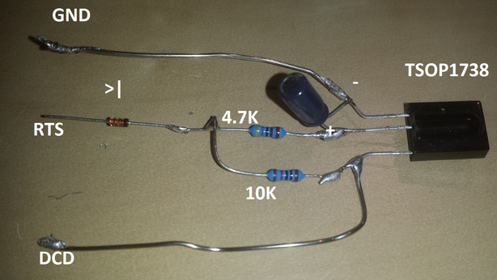
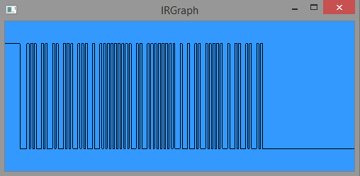
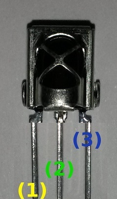
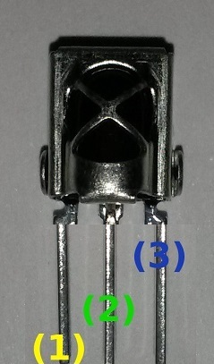
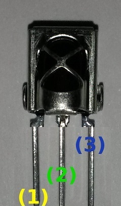

What is it?
Irplus is a free application for the Android Operating System which aims to reproduce infrared signals of various remote
controls exactly as they are sent from the original remote. This is achieved by supporting widely-known representation
formats for infrared codes like LIRC, PRONTO, RAW or proprietary formats found in some specification of manufacturers.
Furthermore each layout of a remote-set can be customized with nearly endless possibilities via importable and exportable
XML files. Codesets for remote controls can be gathered by following the guide i have provided under the "New codes"
section. Irplus comes with minimal permissions required.
What is it not?
It is not a commercial application which tries to "obfuscate" infrared related things from the end-user for providing a dead-simple
to use preset for every device. That would be impossible to do for a single person like me and is not the aim of
this app. All codes are gathered via freely available code information from the internet, gathered by myself using
remotes or contacting manufacturers who were cooperative enough to provide their codes.
Screenshots
How to find codes?
The first attempts to find new codes should be done via a good old internet research. Often someone in this big world probably
already provided codes, or even the manufacturer did. Just use "modelname + discrete infrared codes" in your favorite
search engine.
Common Google Searches to find codes (May need to disable pop up blocker)
Enter model number of remote or device:
Popular web resources about IR codes (3rd party)
Already requested codes - Help to find them or add yours!
You can create new code requests on the
GitHub issue tracker. If you have codes or information about other devices posted there feel free to comment
:-)
Converters and tools
Want to read codes from a remote?
Some Smartphones can record codes (HTC M7,M8,M9+, LG G3, G4). In that case you can use irplus to record the codes.
On this page I will describe the process to read infrared codes from a remote control and how to format them into
an irplus layout file.
Build a COM (RS232) Port infrared receiver for your PC
You can build it yourself by using the following components. Often you can gather these components from old devices like
SAT-receivers and DVD-Players. Note: This will _NOT_ work with USB-to-COM / RS232 Adapters like Prolific!
Shopping list
Image
9-pin COM-Port connector (usually female)

any 36-40Khz IR receiver (example: TSOP 1738)
10K Resistor
4.7K Resistor
Diode 1N4148
Capacitor 4.7µ
Soldering: GND = Pin 5; RTS = Pin 7; DCD = Pin 1; Note: The connector is showing the connector part. When you are soldering
consider that the pins on the back part are on the other side, So for instance Pin 1 is the upper left-most one.
Software to read codes
To read the codes I recommend to use either
lirc (Linux) or
winlirc (Windows). Here you will see the procedure with WinLIRC, but Lirc/Linux one should be very similar.
Use irgraph.exe to test your receiver. A typical infrared code should look like on this picture - It might be wider
or lower, but still you should see some bars.

Use lirc / winlirc to create a configuration file for your remote control. There are two ways of creating this configuration
file: "raw" and "default". It should be first tried to create the config with "default" and if this fails a second
attempt using "raw" should be considered.
Example command for default mode:
irrecord -d plugins\SerialDevice.dll mydevice.cf Example command for raw mode:
irrecord -f -d plugins\SerialDevice.dll mydevice.cf The result of a lirc configuration might look like this:
bits 16
flags SPACE_ENC|CONST_LENGTH
eps 30
aeps 100
header 9176 4407
one 679 1581
zero 679 452
ptrail 686
repeat 9173 2138
pre_data_bits 16
pre_data 0x10EF
gap 108572
toggle_bit_mask 0x0
begin codes
mute 0x6897
pwr 0x7887
av 0x807F
tv/rad 0x2AD5 Congratulations! You have successfully read the codes of your remote!
Advanced Information: One / Zero / Header determines how many time passes during your remote does to represent a
logical state. Example: If we could see the remote’s infrared light we would see a “1” represented by 679µs of ir-light
and following 1581µs of no-light. A “0” would be represented by 679µs of ir-light and 452µs of silence. Bits determines
how many 0 or 1 are possible for this format - in this case (Mute-code) 16-bits (4-Bytes) 00010000 11101111 01101000
10010111. The third and fourth byte are only repeat-sequences where each bit is inverted.
Import the lirc configuration in irplus
You can either directly import the lirc file in irplus or create a customized XML layout. Read more about the layout in the
"Layout" section of this website.
Read codes with Raspberry (or other ARM boards)You can build an easy GPIO reader using the following components
Shopping list
Breadboard (optional, for easier connection)
IR receiver like TSOP 1738 (38KHz)
Male-Female jumper wire - you can use any wire too
Warning: Be careful when connecting the IR-receiver make sure you are using the correct pins, as they might be different
compared to my picture. Some receivers have a different pinout! Take extra care when connecting the VCC (Voltage)
pin. First try with 3.3V, if your receiver works only at very near distance try 5V and check if its getting too hot.

Install lirc (Debian-based OS use apt-get and arch-based OS use pacman, for arch do not add sudo to all commands):
sudo apt-get install pacman -S lirc Edit the modules file:
sudo nano /etc/modules add the lines:
lirc_dev lirc_rpi gpio_in_pin=23 gpio_out_pin=22 Then exit the file with ctrl+x Press y to confirm to save the file Press enter
sudo nano /etc/lirc/hardware.conf Modify the file to this:
DRIVER="default"
# usually /dev/lirc0 is the correct setting for systems using udev
DEVICE="/dev/lirc0"
MODULES="/dev/lirc0"
sudo /etc/init.d/lirc stop
sudo /etc/init.d/lirc start
sudo reboot
test lirc:
sudo /etc/init.d/lirc stop
mode2 -d /dev/lirc0
use lirc:
irrecord -f -d /dev/lirc0 RemoteControl.conf --disable-namespace Notes: Use --disable-namespace to disable checks for used keys and try without "-f" first to avoid raw mode. If
the codes did not work or lirc fails to read use raw mode.
Read codes with Raspbian on Raspberry Pi
This is the new guide which you can follow if you have a brand new Raspberry Pi with Raspbian 3.18.x firmware insatlled.
It's really easy and the recommended way.
Attach the IR-Receiver to the GPIO18 (PIN12) pin, to 3.3V (PIN1), if unreliable try 5V (PIN2), and any GND (e.g.
PIN 14) The pin-out varies by IR-Receiver, read the documentation or datasheet of your receiver.
Install lirc and optional lirc-x package:
sudo apt-get install lirc sudo apt-get install lirc-x Enable lirc-rpi module:
sudo nano /boot/config.txt Change...
#dtoverlay=lirc-rpi to...
dtoverlay=lirc-rpi Reboot raspbian...
sudo reboot Check if lirc is working by trying to receive data...
mode2 -d /dev/lirc0
Creating irplus file or modify existing...
Many preset remote controls in irplus have a very simple layout, as i did not have the time to search a picture of the original
remote control and modify the layout to resemble it. However YOU can do something about it by following this guideline
:-)
1. via App interface You can do basic edits inside the app. See the video below for some inspiration.
2. via XML
Each irplus remote control can be edited to fit your requirements. You can import and export irplus files within the app,
but you may also create a totally new one and import it via file or even via an URL. The files will export als *.irplus
files, which contains the layout and the codes in XML notation. They can be edited with any text editor on any operating
system.
Example
Button labels
You may use the full Unicode (UTF-8) set for naming your buttons. In addition to this you can use font-awesone icons to specify
buttons. To choose an icon use the unicode identifier. Here: "f050". For a full list of font-awesome icons see here.To
get the unicode identifier for an icon, click on it and search for 'Unicode'.
You may also use Unicode Emojis but these may not be available on all Android devices. But 4.4/5.x+ should have
them. See this url for reference and copy+paste them into the label attribute
http://getemoji.com/.
Color reference
Here you will find a table with commonly used colors and their hex code to put on an irplus button. The format is AARRGGBB.
(A=Alpha, R=Red, G=Green, B=Blue). Use them for labelColor and backgroundColor. Use contrasts to make the buttons
more visible.
Color
Hex-Code
Color
Hex-Code
Color
Hex-Code
FF000000
FFC84334
FFFF00FF
FF444444
FFD6A81F
FFFFFF00
FF888888
FF2A4C94
FF00FFFF
FFFFFFFF
FF1E7854
FF00FF00
Grid layout
Each layout consists of columns and rows. The column value is to be seen more like a grid column. A button may span multiple
colums, so we can have each line have a different amount of buttons. To achieve this adhere to the following table
with examples
Buttons in a row?
Columns (Device)
Span (Button)
1
c
s = c
2
c
c / 2
3
c
c / 3
Most common remote layout: 1, 2, 3 and 4 buttons in a row on the same layout. (Lowest common multiple)
Denon Kaseyko format found in official PDF codelist
-
x
DENON_BINARY
Denon Sharp format found in official PDF codelist
-
x
YAMAHA_NEC_HEX
Yamaha NEC format found official service manual
-
x
WINLIRC_NEC1
LIRC notation for standard NEC protocol
frequency, repeat, repeatheader, bits, pre-bits
x
WINLIRC_NECx1
LIRC notation for a variation of NEC protocol. Different header and outro. Often used by Samsung.
frequency, repeat, repeatheader, bits, pre-bits
x
button tag
Property
Description
Validity
label
The label for this button. Can be Unicode (including FontAwesome range)
Mandatory, but can be empty for special uses
labelColor
The color for the label in AARRGGBB notation (example FFAA88CC)
Optional, default will be FFFFFFFF (White)
backgroundColor
The background color for the button in AARRGGBB notation (example FFAA88CC)
Optional, default will be FF444444 (Dark Gray)
labelSize
The size for the label in float dp. Will be adjusted to device's pixel density
Optional, when not used the label size will be dynamically set depending on the label length
span
Specifies how many columns (see device columns) this button should take
Optional, if not set span will be 1. If you do not set this make sure the column property is reasonably
sized
bitmap
A bitmap encoded in Base64 which will be shown on the button. It is recommended to use a transparent
background, as it is rendered on top of the regular background.
Optional, use empty label and labelSize="0"" if you don't want the default text next to the image
bitmapHeight
Specifies the bitmap height in dp. The width will be automatically set to preserve the aspect ratio.
Optional, else the bitmap height in px will be used
Infrared?
If you ask yourself what infrared is and how a remote control like the one which came with your TV works - this is the page
to read. Of course i will not cover everything but it will give you a quick glimpse. If you want to know more about
infrared itself you might want to check out the
wikipedia article 0110100100101
Binary - this is how everything in our digital home's work. This is by far the easiest method of transmitting information
in a machine-readable way, so when the remote controls became ubiquitous most manufacturers decided to send binary
codes encoded in infrared light to cover all their device's functions. Initially remotes had very simple codes which
grew complex while years passed to avoid interference with other devices like it was common in early days.
So how does such a signal look like if eyes could see it? As you can see in the picture the signal sent by an infrared remote is a very fast one - So fast that the length
of a bit is usually given in µs (microseconds). 1µs = 0.000001s. Each 1 or 0 bit is represented by a different pattern.
This pattern is dependent on the format used, but the idea is always the same. You can make infrared light visible
by using a camera. Unlike the human eye they are responsive to infra-red light.
Saving the pattern
There are multiple ways of saving these patterns into files (Not for a specific program, just in general). On this table
i will quickly explain those.
Format name
Description
LIRC
The most common way of saving infrared codes in the Linux world. Usually codes in lirc format contain
a header with data like length of light for one and zero, header, repeats, and how a zero and one
look like. The codes itself is given in hexadecimal notation (like 0xCCFF) which represents the binary
form of the code (only shorter). Some protocols can't be specified because they are too complex.
For these lirc raw mode is used, which just contains the on-off time patterns.
PRONTO
Originally a proprietary format it is now used very often for programming universal remotes controlles.
All Pronto codes start with a header containing the burst pair numbers. A burst pair consists of
2-bytes (e.g. 0010 0040) telling how much time the light should be "on" and "off". Time is not given
in msec but in carrier cycles.
BINARY
Some datasheet specification use binary notation (010001...). The length is inferred by specifing the
protocol
RAW
See lirc raw mode..
IRP
Very complex notation, i would not use it ;-). Example: {38.4k,564}<1,-1|1,-3>(16,-8,D:8,S:8,F:8,~F:8,1,^108m,(16,-4,1,^108m)*)
[D:0..255,S:0..255=255-D,F:0..255]
Audio Infrared Encoder
It is possible to IR signals via the audio port. It does this by modulating the data onto a sine which is half the carrier
frequency (38 kHz is the default if the remote doesn't have a frequency specified). After rectification the sine
becomes a full frequency carrier. The wave is inverted on the right channel, so the left and right channels can be
used to double the voltage.
Source:
http://www.lirc.org/html/audio.htmlBuild the IR blaster
Depending on the voltage power of your phone you might need to build an active (with battery) or passive IR blaster. I recommend
to get IR-LEDs with the lowest Uf voltage possible and test with an 1.2V power source (e.g. 1.2V rechargable battery)
if they are bright enough.
Warning: Please try to check the wiring multiple times before attaching this to a smartphone. Shorting and/or overloading
may damage the phone's audio jack. Also I'm not responsible for any damaged caused by using this method. Try at your
own risk.
I have tested with a passive blaster with a very simple circuit. 2 IR-LEDs connected with each other. The diagram
is an adapted version of the lirc.org diagram with the resistance removed.
This is a photo of my solution using a 'B-Speech Rx2' Bluetooth Stereo receiver. I can position this device with
the self-made blaster connected near the devices i want to control and be able to send IR commands even without direct
line of sight from the phone. Actually this is even better than using the integrated IR-blaster!
Note: This can work with almost any Stereo A2DP Bluetooth Stereo receiver, but it needs to have a high voltage /
peak out.
How to enable
I have ported this method to Android so you can use the Audio-Port or a Bluetooth A2DP Stereo receiver (Mono will probably
not work due to low voltage) to send IR-codes on any phone. To enable this feature select "Audio Infrared Encoder"
from the App's settings, and make sure the Volume rocker for Media is at 100%. If you want to use Bluetooth/A2DP
make sure you are connected to the stereo receiver.
YouTube Tutorial to build IR blasterMade by Cameron Gray. Thanks!Download irplus WAVE for phones without intergrated IR-blasterirplus WAVE on PlayStore
irplus LAN
irplus LAN This is a spin-off app of the original for sending custom infrared codes via a WiFi or Bluetooth. It has all
the same features, but instead of using the IR-blaster it will send the IR-sequence over network (via plain HTTP) to a server which
will do the job of processing and sending them as IR-light. Sounds cool? So you can make use of the app even when
using a phone without IR-blaster. Although there is a small catch. You need to setup a server to process the signal.
The process will be described here.
Prepare the hardware
First you'll need a server obviously. For the sake of simplicity
this guide will be described using a Raspberry Pi 2, as it offers a GPIO port which does the job without complex
circuits. However you can try to setup the server on other platforms as well. Hardware IR transmitter (LED). Note
the electric current of the LED If in A. This is needed to calculate a proper R. Resistor for avoiding to fry the IR-LED. Apply the formula
R = U/I to calculate it. Some cables to connect it to the GPIO. If you use a standard PC you should use a Serial IR transmitter circuit.
Software requirements
This may vary and can be modified to
personal preference. In this section i'll be covering the setup for the Raspberry Pi Software A Linux based operating
system. I've been using OSMC, as i use the Raspberry Pi mostly with this OS attached to my TV. So it's also at the
perfect position to send IR.
This environment will be used
to create the web-server the commands will be sent to and also to send the IR. On many distributions you'll find
it already there if not just install the python package with the package manager. (apt-get install python). Basically
this can be done in other programming languages as well, but i'll provide the code for Python, as i thought it was
the easiest way to do it. If you like to contribute, i'd be happy to include tutorials for other programming languages as well.
Start the server
After fulfilling the requiremets you can download the server script and
start it. Please make sure to modify the listed variables to match your hardware. Variables The GPIO Port where the
IR-LED is connected to. I'll be using GPIO 17. Make sure you're using a 3.3V Pin! Modify this line accordingly:
tx = GPIOIRTransmission(pi, 17, query_carrier[0])
The network interface and port. Basically, just make sure your server
is not accessible from outside your local LAN. And setup firewall properly if you don't want others to change your
TV channels ;-). Adapt to your IP and Port:
server = HTTPServer(('0.0.0.0', 8080), GetHandler)
http://192.168.1.104:8080?command=kill Setup in the App
Setup in the App To setup enter the URL with the port into the App Setting.
Specification of request
Specification of request The requests for IR-signals are made up like this and can be sent from other
applications or the web-browser as well if you have the raw IR code.
http://192.168.1.104:8080/?carrier=38000&code=9000+4500+1200+600 Room for improvement
Find a way to send modulated IR signals without using a native C library. Probably will be hard...
Update the server code to Python3 Provide alternative means to process the requests. E.g. Nodejs, Java etc.
irplus LAN via Bluetooth
irplus LAN This is a spin-off app of the original for sending custom infrared codes via a WiFi or Bluetooth. It has all
the same features, but instead of using the IR-blaster it will send the IR-sequence over network (via plain HTTP) to a server which
will do the job of processing and sending them as IR-light. Sounds cool? So you can make use of the app even when
using a phone without IR-blaster. Although there is a small catch. You need to setup a server to process the signal.
The process will be described here.
Prepare the hardware
For this guide we will use an Arduino Uno with a Bluetooth HC-05 serial module. The infrared LED with a Resistor on it's voltage pin will be attached to a PWM pin (3 as default) and GND.
Software on ArduinoDownload the C (*.ino) sketch for Arduino
1. Upload the script to your Arduino
2. Pair your Android with the HC-05 Bluetooth module (Password: 1234). Note the HC-05 should be in 9600 baud default mode.
3. Now start/restart irplusLAN and select the HC-05 Bluetooth module in the App's settings.
4. If you press a button on irplusLAN the app will transmit the signal to Arduino via Bluetooth and Arduino will send the IR signal.
Common errors...Make sure your phone has a compatible infrared blaster (an IR LED) - without this it can't work! Alternatively use
the Do-It-Yourself blaster explained in the section 'No IR port'.Try the available codes for a specific manufacturer, even if your device is not listed the chance to make it work
is high, since the codes are the same most of the times. For some manufacturers I have added the model numbers
of the remotes and not the devices. An example for this is Samsung. Here each remote has codes starting with
AA, AH, BN etc. check yours and start from there...Some mobile phone covers, cases, bumpers etc. may cover the IR LED (its usually at the top, like on remote controls)
- make sure it is in line-of-sight to the device you want to control.The IR receiver of the device you want to control must not be covered, even glass can be an issue with some phones
(unlike the real remote, which has much higher LED power, since they can use bigger LEDs here.Try to change the frequency and repeat values (reasonable values are 1 to 4) via 'Edit'. Some devices may need a
special frequency. Most common frequencies are 36000Hz, 38000Hz, 40000Hz. You can also try some values in between,
to optimize reception.
Get access to beta versions
You can install the latest beta version of irplus by using the following link.
irplus - Beta version (Integrated IR blaster) irplusWAVE - Beta version (Homebrew IR blaster) irplusLAN - Beta version (IR via HTTP)
If you encounter a crash or issue please report it via the report button and/or via mail. You can always switch back to stable
if you encounter an issue with beta. There isn't always a beta version available. If there is no beta version and
you are a tester, you will simply get the stable (production) one.
For any questions, problems or feedback feel free to contact me:Email GitHub Issues


 
